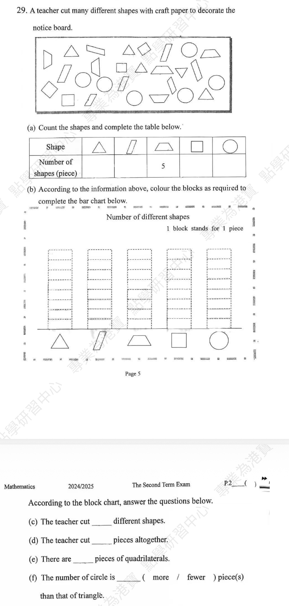
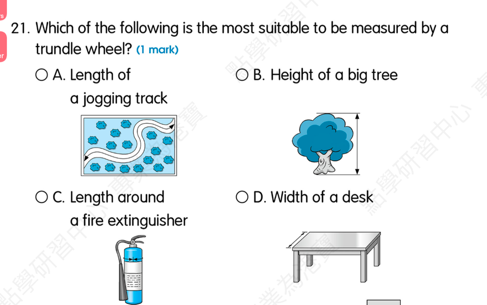

The club ________ (hold) games for kids every summer.
Answer: holds
Explanation: 一般现在时；第三人称单数主语动词加 s/es，复数或 I/we/they 用原形。
已掌握
| # | 单词/词组 | 中文意思 | 例句/说明 | 已掌握 |
|---|---|---|---|---|
| noun 名词 | ||||
| 1 | parents | 父母 | My parents love me. | |
| 2 | playroom | 游戏房 | The children are in the playroom. | |
| 3 | sign | 标志 | Read the sign carefully. | |
| 4 | hall | 大厅 | We meet in the school hall. | |
| 5 | church | 教堂 | The old church is quiet. | |
| 6 | zebra | 斑马 | The zebra has black and white stripes. | |
| 7 | dinner | 晚饭 | We eat dinner at home. | |
| 8 | doctor | 医生 | The doctor checked my temperature. | |
| verb 动词 | ||||
| 9 | visit | 参观；登录 | I visit the museum with my class. | |
| preposition 介词 | ||||
| 10 | above | 在……之上 | The clock is above the board. | |
| 11 | behind | 在……之后；在……后面 | The cat is behind the box. | |
| phrase 短语 | ||||
| 12 | set the table | 摆餐具 | I set the table before dinner. | |
| 13 | Christmas Eve | 平安夜 | We decorate the tree on Christmas Eve. | |
| 14 | years old | 年龄 | I am seven years old. | |
| noun phrase 名词短语 | ||||
| 15 | police station | 警局 | We took the lost bag to the police station. | |
| adverb 副词 | ||||
| 16 | often | 经常 | We often play in the park. | |
| uncategorized 未分类 | ||||
| 17 | water | 浇水 | Please water the plants. | |
| 18 | case | 盒子 | Put your pencils in the case. | |
| 19 | floor | 楼层 | Our classroom is on the second floor. | |
| 20 | diary | 日记 | I write in my diary every evening. | |
| # | 单词/词组 | 中文意思 | 例句/说明 | 已掌握 |
|---|---|---|---|---|
| adjective 形容词 | ||||
| 1 | dangerous | 危险的 | The road is dangerous. | |
| 2 | excellent | 优秀 | Your work is excellent. | |
| 3 | thick | 厚的 | This book is thick. | |
| noun 名词 | ||||
| 4 | word | 单词 | Please write fifty words. | |
| 5 | Australia | 澳大利亚 | Australia is a big country. | |
| 6 | stairs | 楼梯 | Please walk up the stairs. | |
| 7 | advert | 广告 | I saw an advert for a new toy. | |
| 8 | example | 例子 | This is an example. | |
| 9 | hamster | 仓鼠 | The hamster sleeps in its cage. | |
| 10 | goldfish | 金鱼 | The goldfish swims in the bowl. | |
| 11 | dust | 灰尘 | There is dust on the shelf. | |
| 12 | signature | 签名（名词） | Please write your signature at the bottom of the form. | |
| 13 | principal | 校长 | Our principal welcomed the new students. | |
| 14 | Carnival | 嘉年华 | We will go to the Carnival on Sunday. | |
| 15 | costume | 戏服 | I wear a costume at the festival. | |
| 16 | picnic | 野餐 | We have a picnic in the park. | |
| 17 | spelling | 拼写 | I checked the spelling of the word. | |
| noun phrase 名词短语 | ||||
| 18 | role model | 榜样；模范 | She is a role model for younger students. | |
| verb 动词 | ||||
| 19 | train | 训练 | I train every day. | |
| 20 | celebrate | 庆祝 | We celebrate my birthday. | |
| 21 | reply | 回复 | Please reply to my email. | |
| 22 | roll | 转动 | The ball can roll. | |
| phrase 短语 | ||||
| 23 | Causeway Bay | 铜锣湾 | We went shopping in Causeway Bay. | |
| 24 | reading comprehension | 阅读理解 | We practise reading comprehension at school. | |
| 25 | Lamma Island | 南丫岛 | We took a ferry to Lamma Island. | |
| verb phrase 动词短语 | ||||
| 26 | cheer sb. up | 使某人开心 | I tell Tom a joke to cheer him up. | |
| number 数词 | ||||
| 27 | million | 一百万 | One million is 1,000,000. | |
| uncategorized 未分类 | ||||
| 28 | concert | 音乐会 | We went to a concert last night. | |
| 29 | plain | 普通的 | I wore a plain T-shirt with no picture on it. | |
| adverb 副词 | ||||
| 30 | accidentally | 偶然地；意外地 | I accidentally dropped my pencil. | |
| # | 单词/词组 | 中文意思 | 例句/说明 | 已掌握 |
|---|---|---|---|---|
| time/date 时间日期 | ||||
| 1 | September | 九月 | September is the ninth month. | |
| 2 | Tuesday | 星期二 | Tuesday is a weekday. | |
| 3 | Sunday | 星期日 | Sunday is a weekend day. | |
| numbers 数字 | ||||
| 4 | one | 1 | One is 1. | |
| 5 | two | 2 | Two is 2. | |
| 6 | eight | 8 | Eight is 8. | |
| 7 | thirteen | 13 | Thirteen is 13. | |
| 8 | eighteen | 18 | Eighteen is 18. | |
| 9 | twenty | 20 | Twenty is 20. | |
| 10 | forty | 40 | Forty is 40. | |
| 11 | seventy | 70 | Seventy is 70. | |
| solid shape 立体图形 | ||||
| 12 | triangular prism | 三棱柱 | A triangular prism has triangular faces. | |
| 13 | pentagonal pyramid | 五棱锥 | A pentagonal pyramid has one pentagonal base and five triangular side faces. | |
| 14 | cylinder | 圆柱 | A cylinder has two circular faces. | |
| plane shape 平面图形 | ||||
| 15 | rectangle | 长方形 | A rectangle has four right angles. | |
| # | 单词/词组 | 中文意思 | 例句/说明 | 已掌握 |
|---|---|---|---|---|
| numbers 数字 | ||||
| 1 | 3-digit number | 三位数 | A 3-digit number has three digits. | |
| operations 运算 | ||||
| 2 | total | 总共的 | Find the total number of apples. | |
| 3 | be left | 剩下的 | How many apples will be left? | |
| geometry 几何 | ||||
| 4 | grid | 网格 | A grid helps us find positions. | |
| 5 | curve | 曲线 | Draw a curve. | |
| 6 | opposite side | 对边 | In a rectangle, the opposite sides are equal. | |
| directions 方向 | ||||
| 7 | direction | 方向 | Direction tells us where to go. | |
| question word 题目词 | ||||
| 8 | compare | 比较 | We compare two numbers. | |
| shape 形状 | ||||
| 9 | circle | 圈；圆 | Draw a circle around the answer. | |
| answer 答案 | ||||
| 10 | correct | 正确的 | Choose the correct answer. | |
| place value 位值 | ||||
| 11 | units | 个位 | The digit is in the units place. | |
| comparison 比较 | ||||
| 12 | most | 最多的 | Which group has the most? | |
| time/date 时间日期 | ||||
| 13 | minute hand | 分针 | At three o'clock, the minute hand points to 12. | |
| 14 | common year | 平年 | A common year has 365 days. | |
| position 位置 | ||||
| 15 | below | 下面 | The box is below the table. | |
| 16 | front | 前面 | The door is at the front of the room. | |
| operations calculation 运算 | ||||
| 17 | multiplication | 乘法 | Multiplication can use times. | |
| 18 | product | 积 | The product is the answer in multiplication. | |
| 19 | subtract A from B | B-A | "Subtract A from B" means B - A. | |
| 20 | dividend | 被除数 | The dividend is divided by the divisor. | |
| teacher math vocabulary 老师数学词汇 | ||||
| 21 | finish | 完成 | Please finish the calculation. | |
| 22 | start | 开始 | Start counting from ten. | |
| currency money 货币 | ||||
| 23 | exchange | 交换 | We exchange money at the counter. | |
| 24 | coin | 硬币 | The coin is round. | |
| measurement 测量 | ||||
| 25 | measure | 测量 | We measure the length with a ruler. | |
| 26 | distance | 距离 | Find the distance between the two points. | |
| 句型结构 | ||||
| 27 | Angle ... is larger than Angle ... | 角......大于角...... | Angle A is larger than Angle B. | |
| 28 | Angle ... is the smallest. | 角......是最小的。 | Angle B is the smallest. | |
| 29 | ... is to the east of ... | ......位于......的东侧。 | The school is to the east of the park. | |
| 30 | ... is to the north of ... | ......位于......的北侧。 | The playground is to the north of the hall. | |


